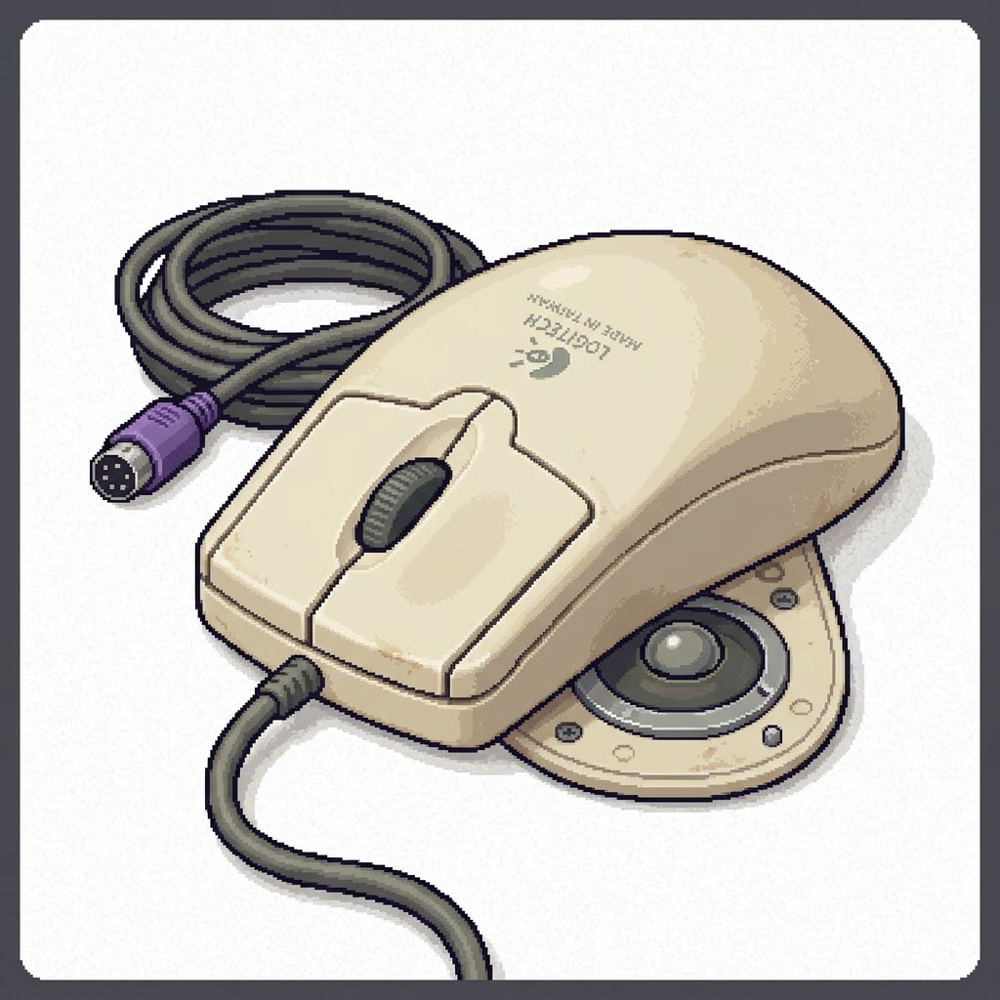

Meu primeiro post
Por: João Roberto
Boas-vindas ao meu novo blog! Aqui vou compartilhar dicas de programação e curiosidades da área de tecnologia.
Vou compartilhar conhecimentos sobre tecnologia e programação
Boas-vindas ao meu novo blog! Aqui vou compartilhar dicas de programação e curiosidades da área de tecnologia.
Estima-se que 90% de todos os dados existentes no mundo hoje foram gerados apenas nos últimos anos. Vivemos em uma verdadeira explosão de informação que não para de acelerar.
Fonte: Jornal Opção

Antes do design ergonômico e das luzes RGB, o primeiro mouse do mundo foi construído em madeira! Criado por Douglas Engelbart em 1964, ele tinha o formato de uma caixa quadrada e apenas um botão.
Fonte: TecMundo